| LTPDA Toolbox™ | contents | |
State space modeling is efficient to simulate systems with large dimensionality, be it in terms of inputs, outputs, or pole/zeros. Adding nonlinearities to a model is also easier as in the frequency domain, however there is no such capability in the toolbox yet. Another reason to use them is to build complex parametric models, where intricated parameters make impossible the symbolic calculation of the transfer function coefficients – as a matter of fact the transfer function can be computed out of a determinant involving the A matrix, explaining the complexity of the calculation.
For tasks such as identification, state space modeling is computationally rather heavy, especially if colored noise is involved in the process.
State space models can be converted into a matrix of transfer function in the s- or the z-domain. The functions in the toolbox that enable this are ss2pzmodel, ss2miir, ss2rational.
In order to familiarize with state space modeling, this help page is a mere copy of the Wiki page .
In control engineering, a state space representation is a mathematical model of a physical system as a set of input, output and state variables related by first-order differential equations. To abstract from the number of inputs, outputs and states, the variables are expressed as vectors and the differential and algebraic equations are written in matrix form (the last one can be done when the dynamical system is linear and time invariant). The state space representation (also known as the "time-domain approach") provides a convenient and compact way to model and analyze systems with multiple inputs and outputs. With p inputs and q outputs, we would otherwise have to write down Laplace transforms to encode all the information about a system. Unlike the frequency domain approach, the use of the state space representation is not limited to systems with linear components and zero initial conditions. "State space" refers to the space whose axes are the state variables. The state of the system can be represented as a vector within that space.

Typical state space model
The internal state variables are the smallest possible subset of system variables that can represent the entire state of the system at any given time. State variables must be linearly independent; a state variable cannot be a linear combination of other state variables. The minimum number of state variables required to represent a given system, n, is usually equal to the order of the system's defining differential equation. If the system is represented in transfer function form, the minimum number of state variables is equal to the order of the transfer function's denominator after it has been reduced to a proper fraction. It is important to understand that converting a state space realization to a transfer function form may lose some internal information about the system, and may provide a description of a system which is stable, when the state-space realization is unstable at certain points. In electric circuits, the number of state variables is often, though not always, the same as the number of energy storage elements in the circuit such as capacitors and inductors.
The most general state-space representation of a linear system with p inputs, q outputs and n state variables is written in the following form:


where:
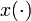 is called the "state vector", 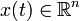;
 is called the "output vector",
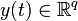;
is called the "output vector",
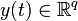;
 is called the "input (or control) vector",
is called the "input (or control) vector",
 ;
;
 is the "state matrix",
is the "state matrix",
 ,
,
 is the "input matrix",
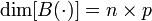,
is the "input matrix",
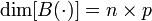,
 is the "output matrix",
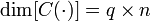,
is the "output matrix",
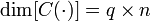,
 is the "feedthrough (or feedforward) matrix" (in cases
where the system model does not have a direct feedthrough,
is the "feedthrough (or feedforward) matrix" (in cases
where the system model does not have a direct feedthrough,
 is the zero matrix),
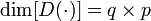,
is the zero matrix),
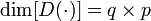,
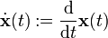.
In this general formulation, all matrices
are allowed to be time-variant (i.e., their elements can depend on
time); however, in the common LTI
case, matrices will be time invariant. The time variable t
can be a "continuous" (e.g.,
 )
or discrete (e.g.,
)
or discrete (e.g.,
 ).
In the latter case, the time variable is usually indicated as k.
Hybrid systems
allow for time domains that have both continuous and discrete parts.
Depending on the assumptions taken, the state-space model
representation can assume the following forms:
).
In the latter case, the time variable is usually indicated as k.
Hybrid systems
allow for time domains that have both continuous and discrete parts.
Depending on the assumptions taken, the state-space model
representation can assume the following forms:
|
System type |
State-space model |
|
Continuous time-invariant |
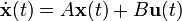 |
|
Continuous time-variant |
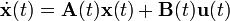 |
|
Discrete time-invariant |
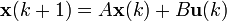 |
|
Discrete time-variant |
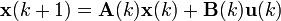 |
|
Laplace domain of |
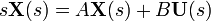 |
|
Z-domain of |
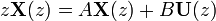 |
Example: Continuous-time LTI case
Stability and natural response characteristics of a continuous-time LTI system (i.e., linear with matrices that are constant with respect to time) can be studied from the eigenvalues of the matrix A. The stability of a time-invariant state-space model can be determined by looking at the system's transfer function in factored form. It will then look something like this:
The denominator of the transfer function is equal to the characteristic polynomial found by taking the determinant of sI − A,
The roots of this polynomial (the eigenvalues) are the system transfer function's poles (i.e., the singularities where the transfer function's magnitude is unbounded). These poles can be used to analyze whether the system is asymptotically stable or marginally stable. An alternative approach to determining stability, which does not involve calculating eigenvalues, is to analyze the system's Lyapunov stability.
The zeros found in the numerator of 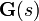 can similarly be used to determine whether the system is minimum phase.
The system may still be input–output stable (see BIBO stable) even though it is not internally stable. This may be the case if unstable poles are canceled out by zeros (i.e., if those singularities in the transfer function are removable).
Main article: Controllability
Thus, state controllability condition implies that it is possible – by admissible inputs – to steer the states from any initial value to any final value within some finite time window. A continuous time-invariant linear state-space model is controllable if and only if
Main article: Observability
Observability is a measure for how well internal states of a system can be inferred by knowledge of its external outputs. The observability and controllability of a system are mathematical duals (i.e., as controllablity provides that an input is available that brings any initial state to any desired final state, observability provides that knowing an output trajectory provides enough information to predict the initial state of the system).
A continuous time-invariant linear state-space model is observable if and only if

(Rank is the number of linearly independent rows in a matrix.)
The "transfer function" of a continuous time-invariant linear state-space model can be derived in the following way:
First, taking the Laplace transform of
yields
Next, we simplify for 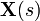, giving
this is substituted for in the output equation
Because the transfer function 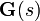 is defined as the ratio of the output to the input of a system, we take
and substitute the previous expression for
 with respect to
with respect to
 ,
giving
,
giving
Clearly must have q by p dimensionality, and thus has a total of qp elements. So for every input there are q transfer functions with one for each output. This is why the state-space representation can easily be the preferred choice for multiple-input, multiple-output (MIMO) systems.
Any given transfer function which is strictly proper can easily be transferred into state-space by the following approach (this example is for a 4-dimensional, single-input, single-output system)):
Given a transfer function, expand it to reveal all coefficients in both the numerator and denominator. This should result in the following form:
The coefficients can now be inserted directly into the state-space model by the following approach:

This state-space realization is called controllable canonical form because the resulting model is guaranteed to be controllable (i.e., because the control enters a chain of integrators, it has the ability to move every state).
The transfer function coefficients can also be used to construct another type of canonical form

This state-space realization is called observable canonical form because the resulting model is guaranteed to be observable (i.e., because the output exits from a chain of integrators, every state has an effect on the output).
Transfer functions which are only proper (and not strictly proper) can also be realised quite easily. The trick here is to separate the transfer function into two parts: a strictly proper part and a constant.
The strictly proper transfer function can then be transformed into a
canonical state space realization using techniques shown above. The
state space realization of the constant is trivially
 .
Together we then get a state space realization with matrices A,B
and C determined by the strictly proper part, and matrix D
determined by the constant.
.
Together we then get a state space realization with matrices A,B
and C determined by the strictly proper part, and matrix D
determined by the constant.
Here is an example to clear things up a bit:
which yields the following controllable realization
Notice how the output also depends directly on the input. This is due to the 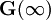 constant in the transfer function.

Typical state space model with feedback
A common method for feedback is to multiply the output by a matrix K and setting this as the input to the system: 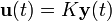. Since the values of K are unrestricted the values can easily be negated for negative feedback. The presence of a negative sign (the common notation) is merely a notational one and its absence has no impact on the end results.
becomes
solving the output equation for 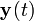 and substituting in the state equation results in
The advantage of this is that the eigenvalues of A can be controlled by setting K appropriately through eigendecomposition of 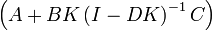. This assumes that the open-loop system is controllable or that the unstable eigenvalues of A can be made stable through appropriate choice of K.
One fairly common simplification to this system is removing D and setting C to identity, which reduces the equations to
This reduces the necessary eigendecomposition to just A + BK.
Output feedback with set point
In addition to feedback, an input, r(t), can be added such that 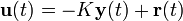.
becomes
solving the output equation for and substituting in the state equation results in
One fairly common simplification to this system is removing D, which reduces the equations to
A classical linear system is that of one-dimensional movement of an object. The Newton's laws of motion for an object moving horizontally on a plane and attached to a wall with a spring
where
y(t)
is position;
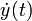
is velocity;
 is acceleration
is acceleration
u(t) is an applied force
k1 is the viscous friction coefficient
k2 is the spring constant
m is the mass of the object
The state equation would then become
where
x1(t) represents the position of the object
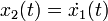 is the velocity of the object
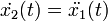 is the acceleration of the object
the output is the position of the object
The controllability test is then
which has full rank for all k1 and m.
The observability test is then
which also has full rank. Therefore, this system is both controllable and observable.
The more general form of a state space model can be written as two functions.
The first is the state equation and the latter is the output equation. If the function 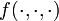 is a linear combination of states and inputs then the equations can be written in matrix notation like above. The u(t) argument to the functions can be dropped if the system is unforced (i.e., it has no inputs).
A classic nonlinear system is a simple unforced pendulum
where
θ(t) is the angle of the pendulum with respect to the direction of gravity
m is the mass of the pendulum (pendulum rod's mass is assumed to be zero)
g is the gravitational acceleration
k is coefficient of friction at the pivot point
l is the radius of the pendulum (to the center of gravity of the mass m)
The state equations are then
where
x1(t): = θ(t) is the angle of the pendulum
 is the rotational velocity of the pendulum
is the rotational velocity of the pendulum
 is the rotational acceleration of the pendulum
is the rotational acceleration of the pendulum
Instead, the state equation can be written in the general form
The equilibrium/stationary
points of a system are when
 and so the equilibrium points of a pendulum are those that satisfy
and so the equilibrium points of a pendulum are those that satisfy
for integers n.
| |
Introduction to parametric models in LTPDA | Introduction to Statespace Models with LTPDA | |
©LTP Team
{kind=link}